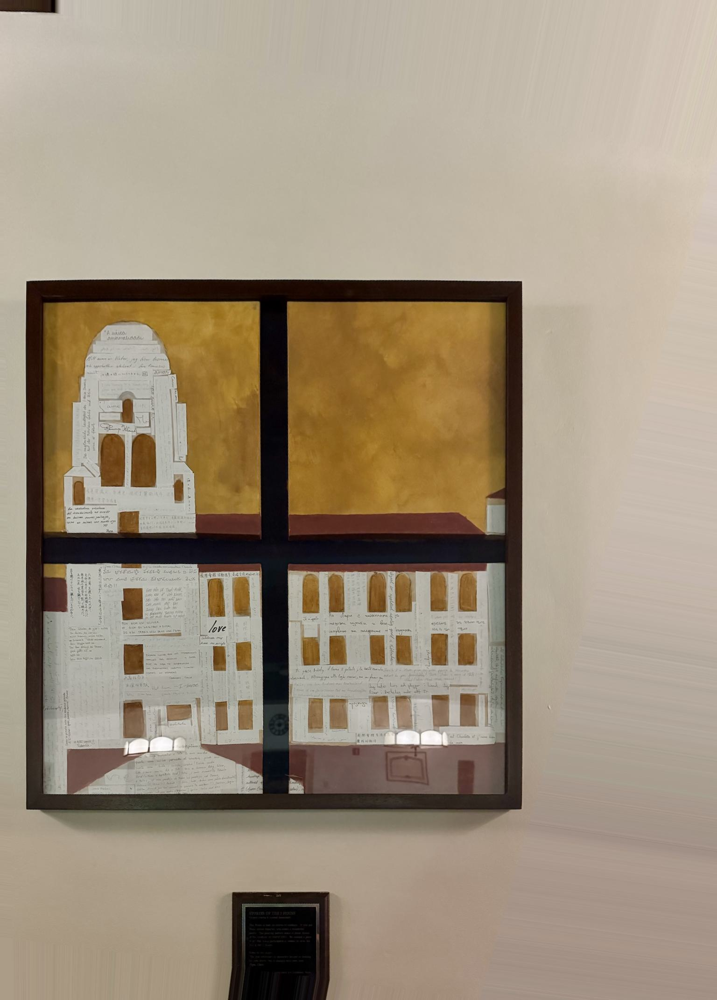
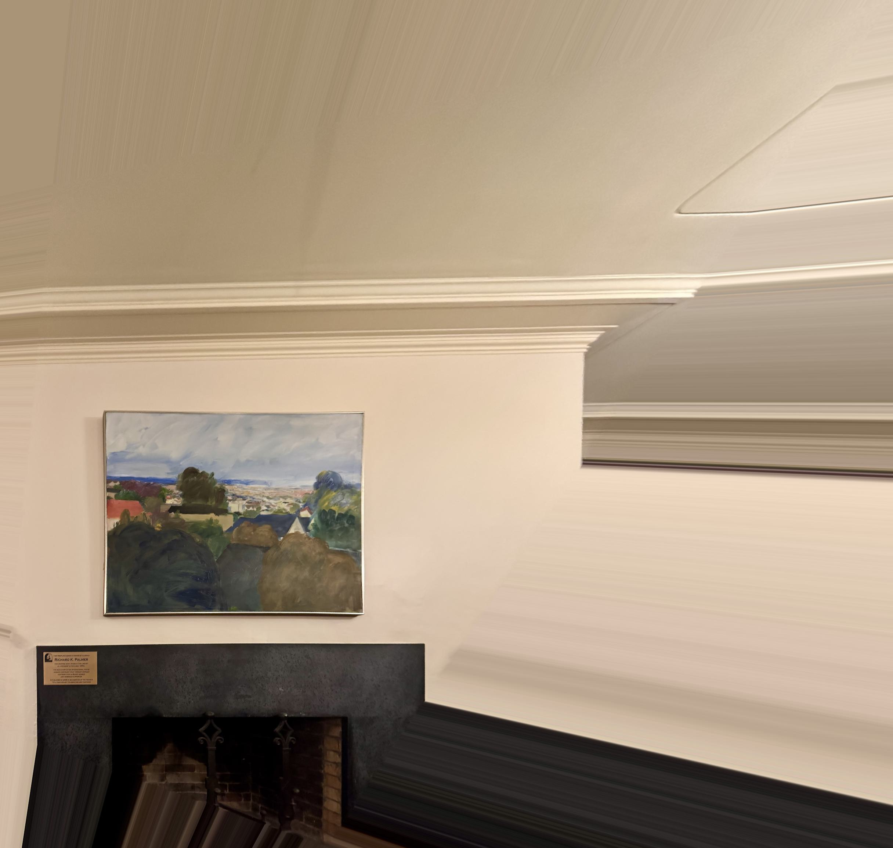
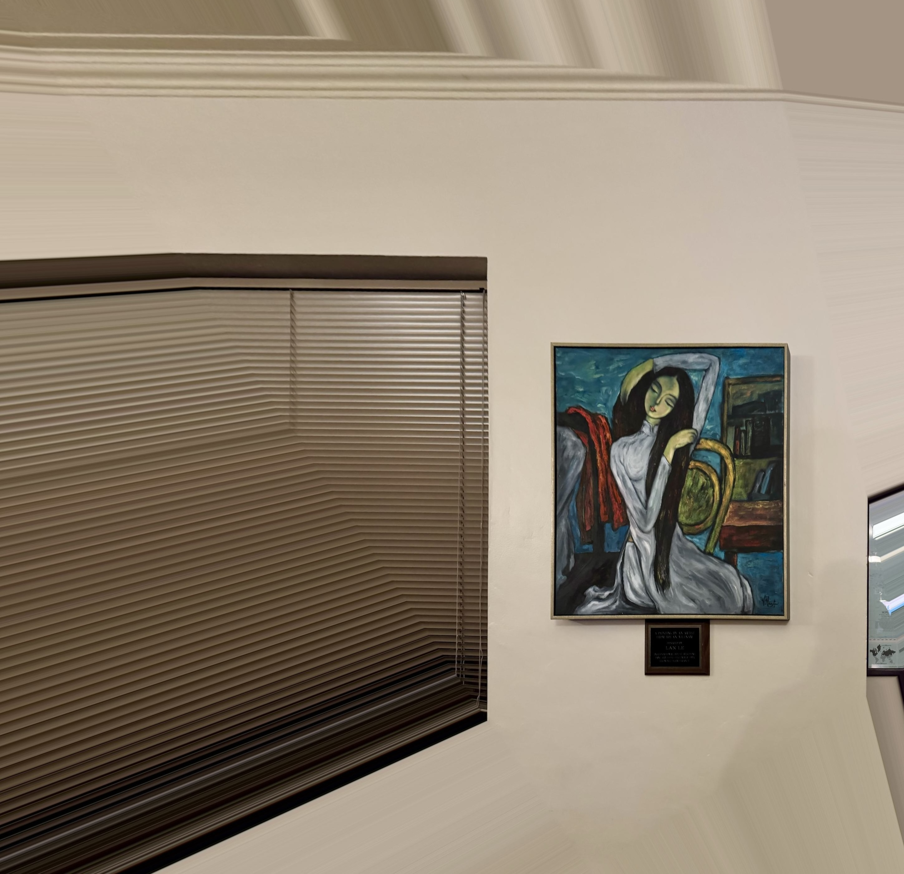
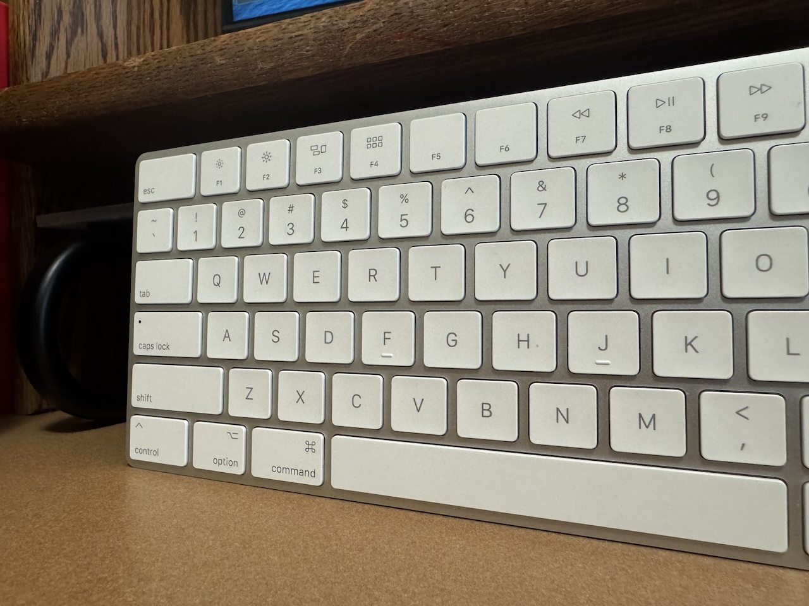
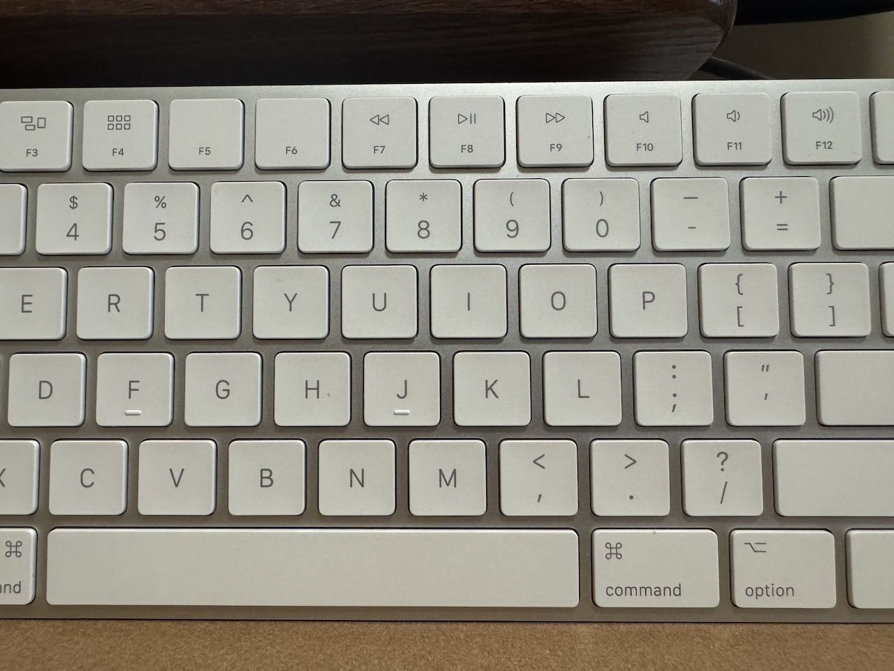
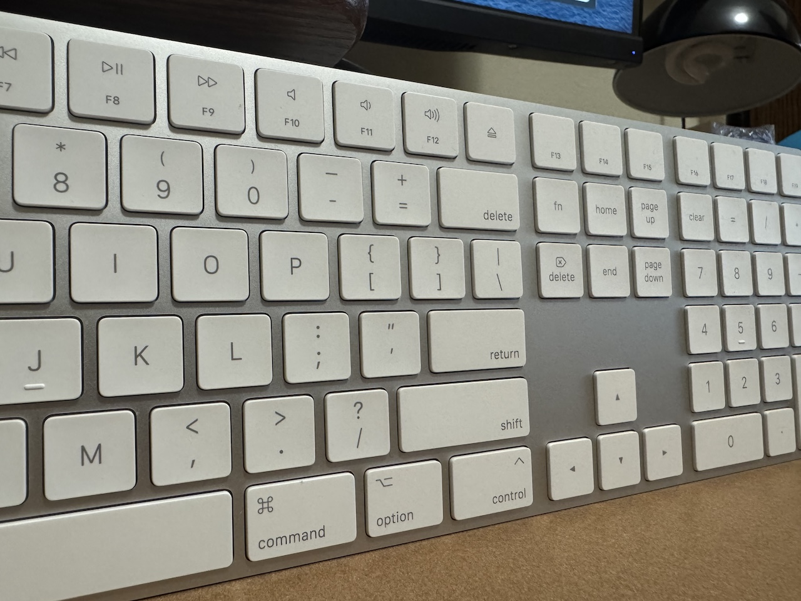
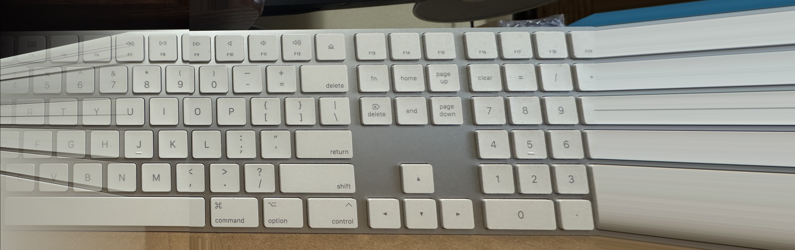

Project Overview
Rectifying some crooked paintings, and stitching together a keyboard.
Computing Homography Matrix
The goal is to find a homography matrix that transforms points from one image to another. The relationship between points can be expressed in homogeneous coordinates as:
This implies that \( w = g \cdot p_1 + h \cdot p_2 + 1 \). We can substitute this into the relations:
These equations are not linear in \(p_1\) and \(p_2\), but they are linear in \(a, b, c, d, e, f, g, h\). By stacking this into matrix form, we obtain:
The left data matrix and right data vector are extended by 2 rows for each additional correspondence. We require at least 4 correspondences between the two images for the system to not be underdetermined.
Rectifying Images






Creating the Mosaic
While the results aren't quite what one would expect, for this section of the project, I took 3 images of my keyboard while pivoting my phone on the axis of the camera hub. I then warped the left and right images and stitched them to the middle image and blended.




Due to imperfect mapping, the end result of my mosaic is not quite as clean as I would like.
Acknowledgements
This project is a course project for CS 180 at UC Berkeley. Part of the starter code is provided by course staff. This website template is referenced from Bill Zheng.